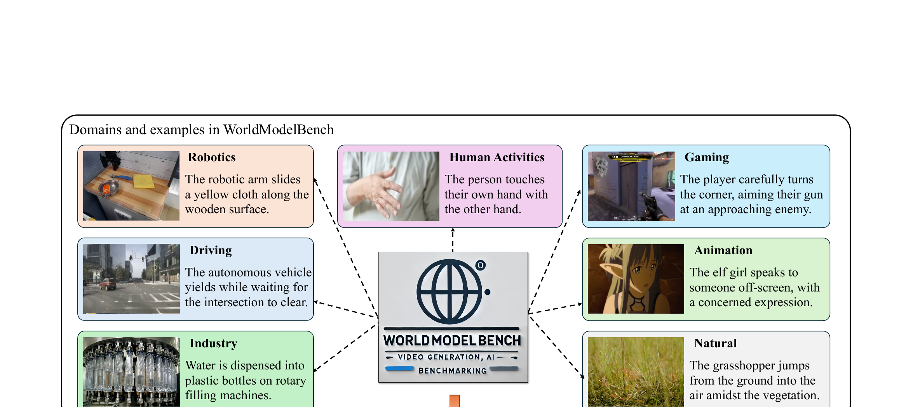

WorldModelBench: Judging Video Generation Models As World Models
Li 等 · 2025 技术报告 · arXiv:2502.20694 · Zotero 86NRF8CL
WorldModelBench 用开放域、可变应用的视频场景检查三个层级：生成是否按指令、世界是否合理、视觉是否高质量；物理部分用五类法律的人类二元标签训练专门 VLM judge。
§1 Introduction：为什么“视频生成模型”不能自动升级成“世界模型”
许多视频模型开始以 robotics、driving 和 gaming 的 world model 自居，但普通 benchmark 主要看视觉质量与 prompt adherence，可能忽略悬空机械臂、物体凭空消失、数量不守恒等关键违反。若评测目标不改变，模型会继续优化观感而非可预测的世界规律。
WorldModelBench 以 commonsense、instruction following 和 physics adherence 三层标准评估 text/image-conditioned future generation，并细分物理违反类别。团队收集约 6.7 万人工标签评测 14 个前沿模型，再训练轻量 judger 自动复现人类偏好；judger 还能作为 reward 反向改善生成模型。
展开原文 · 数据锚点
“crowd-source 67K human labels”
§2 Related Work：从视频质量、物理 benchmark 到可训练裁判
VBench 适合通用生成质量，VideoPhy 聚焦物理常识，Video reward model 则学习人类对美学或相关性的偏好。WorldModelBench 将“世界建模违反”作为专门标注目标，并要求自动 judge 在细粒度错误上对齐人工，而非直接调用通用 VLM 打分。
更进一步，论文把 evaluator 接入优化环，说明 benchmark 不只是排行榜，也能形成 reward gradient。但这引出 Goodhart 风险：模型可能学会讨好固定 judger，而不真正改善物理。因此独立人工集和跨 judge 验证仍不可省。
§3 World model 的三类失败
§4 Benchmark 与自动裁判

1. 采样多域场景
世界规律在不同应用里显现。
输入是什么：真实场景的照片、视频或传感器记录。此时它们只是原始素材，还不能直接在物理引擎中交互。
这一步究竟做什么：本步骤执行“采样多域场景”。具体来说，世界规律在不同应用里显现。 它控制模型究竟看到什么、需要预测什么，避免后续比较因为输入长度或难度不同而失去意义。
输出到哪里：一个或多个候选未来、动作或轨迹，以及必要的中间状态。这个结果会交给下一步“生成未来视频”继续处理。
为什么不能省略：它把未经处理的原始问题变成后续模块可以计算的输入，是整条链路的起点。
2. 生成未来视频
对齐条件和长度以便比较。
输入是什么：来自上一步“采样多域场景”的产物：一个或多个候选未来、动作或轨迹，以及必要的中间状态。本步骤还会按论文设置读取当前条件、时间步或训练信号。
这一步究竟做什么：本步骤执行“生成未来视频”。具体来说，对齐条件和长度以便比较。 模型从相同起点产生候选未来，后续模块再检查这些未来是否符合条件、物理规律或动作需要。
输出到哪里：一个或多个候选未来、动作或轨迹，以及必要的中间状态。这个结果会交给下一步“人工标物理定律”继续处理。
为什么不能省略：它承担上下两步之间的接口；缺少它，前一步产生的信息无法以正确格式或正确含义传到下一步。
3. 人工标物理定律
提供高质量 judge 监督。
输入是什么：来自上一步“生成未来视频”的产物：一个或多个候选未来、动作或轨迹，以及必要的中间状态。本步骤还会按论文设置读取当前条件、时间步或训练信号。
这一步究竟做什么：本步骤执行“人工标物理定律”。具体来说，提供高质量 judge 监督。 这里处理的只是整条链路中的一个接口：把上一步的结果整理成下一步能够正确读取和继续计算的形式。
输出到哪里：经过本步骤处理、含义更明确的中间结果。这个结果会交给下一步“自动规模化评分”继续处理。
为什么不能省略：只复制外观不能产生可信交互；需要把视觉表示与碰撞、关节或动力学对应起来，策略训练才有物理意义。
4. 自动规模化评分
同时保留人类相关性检查。
输入是什么：来自上一步“人工标物理定律”的产物：经过本步骤处理、含义更明确的中间结果。本步骤还会按论文设置读取当前条件、时间步或训练信号。
这一步究竟做什么：本步骤执行“自动规模化评分”。具体来说，同时保留人类相关性检查。 这里处理的只是整条链路中的一个接口：把上一步的结果整理成下一步能够正确读取和继续计算的形式。
输出到哪里：经过本步骤处理、含义更明确的中间结果。这是图中这条链路的最终产物，随后会进入真实执行、模型更新或指标评测。
为什么不能省略：它把前面得到的内部结果落实为可执行动作、可训练模型或可解释指标，完成从方法到结果的最后一步。
§5 五类物理检查
§6 不只排名模型
论文还探索用评估信号指导模型改进，说明 benchmark 可以成为训练反馈。但 judge 偏差也会被优化器利用，因此必须防 reward hacking。
§7 局限
二元物理标签简洁却会丢失误差严重程度；VLM judge 对微小接触和长时因果链仍不可靠。对 WAM 还需增加动作一致性。
§8 使用与复现：裁判既是量尺，也是潜在攻击面
最小可信使用清单
- 保留 commonsense、instruction、physics 分项及错误标签。
- 按被测模型留出验证 judger，报告与人工的 rank correlation。
- 公开 judge prompt、输入帧采样和视频压缩设置。
- 对 reward 优化模型使用冻结外部测试集和盲人工评审。
- WAM 场景另测 action conditioning 与可执行性。
WorldModelBench 把 world-model claim 变成可标注违反，但任何 learned judge 都可能成为新捷径，必须保留独立人工闭环。